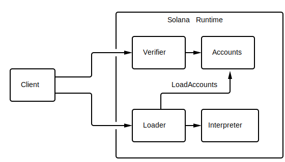

Programming Model
A client app interacts with a Solana cluster by sending it transactions with one or more instructions. The Solana runtime passes those instructions to user-contributed programs. An instruction might, for example, tell a program to move tokens from one account to another or create an interactive contract that governs how tokens are moved. Instructions are executed atomically. If any instruction is invalid, any changes made within the transaction are discarded.
Deploying Programs to a Cluster

As shown in the diagram above a client creates a program and compiles it to an ELF shared object containing BPF bytecode and sends it to the Solana cluster. The cluster stores the program locally and makes it available to clients via a program ID. The program ID is a public key generated by the client and is used to reference the program in subsequent transactions.
A program may be written in any programming language that can target the Berkley Packet Filter (BPF) safe execution environment. The Solana SDK offers the best support for C programs, which is compiled to BPF using the LLVM compiler infrastructure. Alternatively, a client might choose to bypass LLVM and use Python, Lua or C++ to generate BPF directly via the BPF Compiler Collection (BCC).
Storing State between Transactions
If the program needs to store state between transactions, it does so using accounts. Accounts are similar to files in operating systems such as Linux. Like a file, an account may hold arbitrary data and that data persists beyond the lifetime of a program. Also like a file, an account includes metadata that tells the runtime who is allowed to access the data and how. Unlike a file, the account includes metadata for the lifetime of the file. That lifetime is expressed in "tokens", which is a number of fractional native tokens, called lamports. Accounts are held in validator memory and pay "rent" to stay there. Each fullnode periodically scan all accounts and collects rent. Any account that drops to zero lamports is purged.
If an account is marked "executable", it will only be used by a loader to run programs. For example, a BPF-compiled program is marked executable and loaded by the BPF loader. No program is allowed to modify the contents of an executable account.
An account also includes "owner" metadata. The owner is a program ID. The runtime grants the program write access to the account if its ID matches the owner. If an account is not owned by a program, the program is permitted to read its data and credit the account.
In the same way that a Linux user uses a path to look up a file, a Solana client uses public keys to look up accounts. To create an account, the client generates a keypair and registers its public key using the CreateAccount instruction. Once registered, transactions reference account keys to grant programs access to accounts. The runtime grants programs read access by default. To grant write access, the client must either assign the account to a program or sign the transaction using the keypair's secret key. Since only the holder of the secret key can produce valid signatures matching the account's public key, the runtime recognizes the signature as authorization to modify account data or debit the account.
After the runtime executes each of the transaction's instructions, it uses the account metadata and transaction signatures to verify that none of the access rules were violated. If a program violates an access rule, the runtime discards all account changes made by all instructions and marks the transaction as failed.